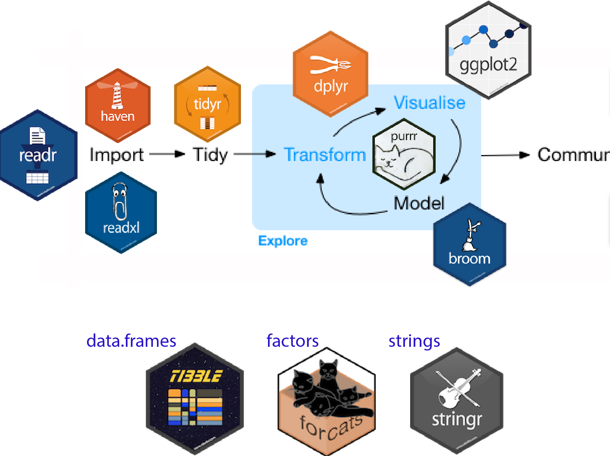
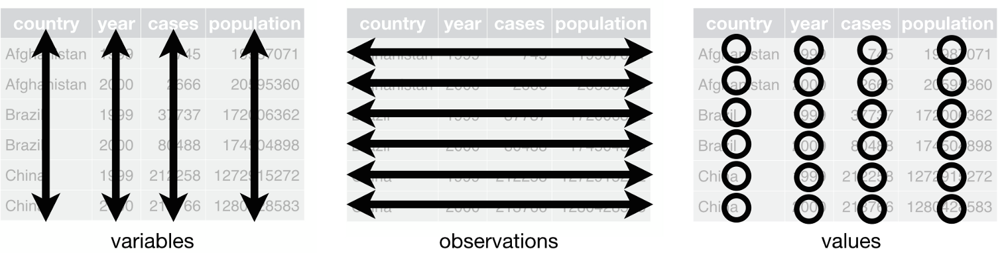
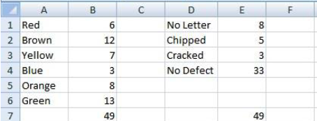
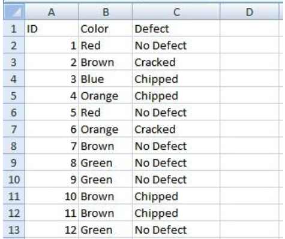
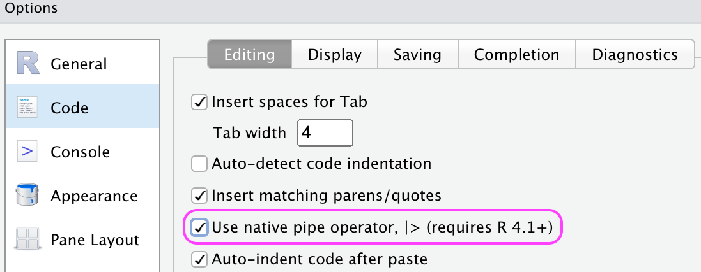
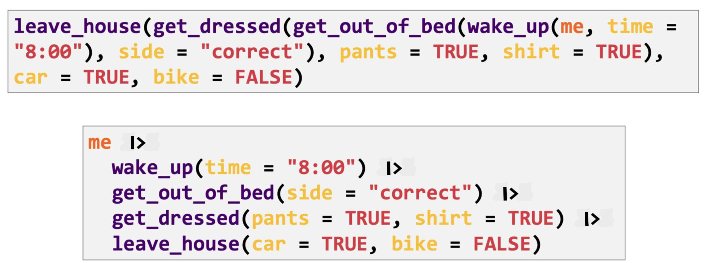

R/Python Data Frames for Data Science
MATH/COSC 3570 Introduction to Data Science
Dr. Cheng-Han Yu
Department of Mathematical and Statistical Sciences
Marquette University
Department of Mathematical and Statistical Sciences
Marquette University
R Tidyverse
tidyverse üì¶
- The tidyverse is a üì¶ for data science.
- All packages share common design philosophy, grammar, and data structures.
- The core tidyverse packages include
Workflow of Data Science with R packages


Install and Load tidyverse üì¶
- tidyverse is loading all the core packages for us!
library(tidyverse)
── Attaching core tidyverse packages ──────────────────── tidyverse 2.0.0 ──
✔ dplyr 1.1.2 ✔ readr 2.1.4
✔ forcats 1.0.0 ✔ stringr 1.5.0
✔ ggplot2 3.4.3 ✔ tibble 3.2.1
✔ lubridate 1.9.2 ✔ tidyr 1.3.0
✔ purrr 1.0.2
── Conflicts ──────────────────────────────────── tidyverse_conflicts() ──
✖ dplyr::filter() masks stats::filter()
✖ dplyr::lag() masks stats::lag()
ℹ Use the conflicted package to force all conflicts to become errorsTidy Data (Data Matrix)
“Happy families are all alike; every unhappy family is unhappy in its own way.” – Leo Tolstoy
- Each variable must have its own column.
- Each observation must have its own row.
- Each value must have its own cell. (match the corresponding row observation and column variable)
Tidy Data (Data Matrix)
“Tidy datasets are all alike, but every messy dataset is messy in its own way.” – Hadley Wickham
- Each variable must have its own column.
- Each observation must have its own row.
- Each value must have its own cell. (match the corresponding row observation and column variable)
Why Tidy Data?
- Each variable must have its own column.
- Each observation must have its own row.
- Each value must have its own cell.
- Advantages of tidy data:
- If you store all data in a tidy way, you only need to learn the tools that work with them.
- Placing variables in columns allows R’s vectorised nature to shine. That makes transforming tidy data feel natural.
-
Practical instructions:
Put each dataset in a data frame.
Put each variable in a column.
Data Frames Store Tidy Data
- Collecting information about the distributions of colors and defects in a bag of M&Ms.
Non-tidy Data
- If you import data in this format into R/Python, you will be in a mess.

Tidy Data
Each row is for one M&M. Each variable is in each column. One value is in a cell.
Don’t code “Red” in one place and “RED” in another. Be consistent!

Modern
Data Frames
Tibbles
- Tibbles are modern version of R data frames.
- Create a new tibble using
tibble(). - It is like
base::data.frame(), but with a couple differences.
x y z
1 1 a 5
2 2 b 4
3 3 c 3
4 4 d 2
5 5 e 1Printing of data.frame Class
How the printing method of data.frame can be improved? (Check iris in your R console)
Sepal.Length Sepal.Width Petal.Length Petal.Width Species
1 5.1 3.5 1.4 0.2 setosa
2 4.9 3.0 1.4 0.2 setosa
3 4.7 3.2 1.3 0.2 setosa
4 4.6 3.1 1.5 0.2 setosa
5 5.0 3.6 1.4 0.2 setosa
6 5.4 3.9 1.7 0.4 setosa
7 4.6 3.4 1.4 0.3 setosa
8 5.0 3.4 1.5 0.2 setosa
9 4.4 2.9 1.4 0.2 setosa
10 4.9 3.1 1.5 0.1 setosa
11 5.4 3.7 1.5 0.2 setosa
12 4.8 3.4 1.6 0.2 setosa
13 4.8 3.0 1.4 0.1 setosa
14 4.3 3.0 1.1 0.1 setosa
15 5.8 4.0 1.2 0.2 setosa
16 5.7 4.4 1.5 0.4 setosa
17 5.4 3.9 1.3 0.4 setosa
18 5.1 3.5 1.4 0.3 setosa
19 5.7 3.8 1.7 0.3 setosa
20 5.1 3.8 1.5 0.3 setosa
21 5.4 3.4 1.7 0.2 setosa
22 5.1 3.7 1.5 0.4 setosa
23 4.6 3.6 1.0 0.2 setosa
24 5.1 3.3 1.7 0.5 setosa
25 4.8 3.4 1.9 0.2 setosa
26 5.0 3.0 1.6 0.2 setosa
27 5.0 3.4 1.6 0.4 setosa
28 5.2 3.5 1.5 0.2 setosa
29 5.2 3.4 1.4 0.2 setosa
30 4.7 3.2 1.6 0.2 setosa
31 4.8 3.1 1.6 0.2 setosa
32 5.4 3.4 1.5 0.4 setosa
33 5.2 4.1 1.5 0.1 setosa
34 5.5 4.2 1.4 0.2 setosa
35 4.9 3.1 1.5 0.2 setosa
36 5.0 3.2 1.2 0.2 setosa
37 5.5 3.5 1.3 0.2 setosa
38 4.9 3.6 1.4 0.1 setosa
39 4.4 3.0 1.3 0.2 setosa
40 5.1 3.4 1.5 0.2 setosa
41 5.0 3.5 1.3 0.3 setosa
42 4.5 2.3 1.3 0.3 setosa
43 4.4 3.2 1.3 0.2 setosa
44 5.0 3.5 1.6 0.6 setosa
45 5.1 3.8 1.9 0.4 setosa
46 4.8 3.0 1.4 0.3 setosa
47 5.1 3.8 1.6 0.2 setosa
48 4.6 3.2 1.4 0.2 setosa
49 5.3 3.7 1.5 0.2 setosa
50 5.0 3.3 1.4 0.2 setosa
51 7.0 3.2 4.7 1.4 versicolor
52 6.4 3.2 4.5 1.5 versicolor
53 6.9 3.1 4.9 1.5 versicolor
54 5.5 2.3 4.0 1.3 versicolor
55 6.5 2.8 4.6 1.5 versicolor
56 5.7 2.8 4.5 1.3 versicolor
57 6.3 3.3 4.7 1.6 versicolor
58 4.9 2.4 3.3 1.0 versicolor
59 6.6 2.9 4.6 1.3 versicolor
60 5.2 2.7 3.9 1.4 versicolor
61 5.0 2.0 3.5 1.0 versicolor
62 5.9 3.0 4.2 1.5 versicolor
63 6.0 2.2 4.0 1.0 versicolor
64 6.1 2.9 4.7 1.4 versicolor
65 5.6 2.9 3.6 1.3 versicolor
66 6.7 3.1 4.4 1.4 versicolor
67 5.6 3.0 4.5 1.5 versicolor
68 5.8 2.7 4.1 1.0 versicolor
69 6.2 2.2 4.5 1.5 versicolor
70 5.6 2.5 3.9 1.1 versicolor
71 5.9 3.2 4.8 1.8 versicolor
72 6.1 2.8 4.0 1.3 versicolor
73 6.3 2.5 4.9 1.5 versicolor
74 6.1 2.8 4.7 1.2 versicolor
75 6.4 2.9 4.3 1.3 versicolor
76 6.6 3.0 4.4 1.4 versicolor
77 6.8 2.8 4.8 1.4 versicolor
78 6.7 3.0 5.0 1.7 versicolor
79 6.0 2.9 4.5 1.5 versicolor
80 5.7 2.6 3.5 1.0 versicolor
81 5.5 2.4 3.8 1.1 versicolor
82 5.5 2.4 3.7 1.0 versicolor
83 5.8 2.7 3.9 1.2 versicolor
84 6.0 2.7 5.1 1.6 versicolor
85 5.4 3.0 4.5 1.5 versicolor
86 6.0 3.4 4.5 1.6 versicolor
87 6.7 3.1 4.7 1.5 versicolor
88 6.3 2.3 4.4 1.3 versicolor
89 5.6 3.0 4.1 1.3 versicolor
90 5.5 2.5 4.0 1.3 versicolor
91 5.5 2.6 4.4 1.2 versicolor
92 6.1 3.0 4.6 1.4 versicolor
93 5.8 2.6 4.0 1.2 versicolor
94 5.0 2.3 3.3 1.0 versicolor
95 5.6 2.7 4.2 1.3 versicolor
96 5.7 3.0 4.2 1.2 versicolor
97 5.7 2.9 4.2 1.3 versicolor
98 6.2 2.9 4.3 1.3 versicolor
99 5.1 2.5 3.0 1.1 versicolor
100 5.7 2.8 4.1 1.3 versicolor
101 6.3 3.3 6.0 2.5 virginica
102 5.8 2.7 5.1 1.9 virginica
103 7.1 3.0 5.9 2.1 virginica
104 6.3 2.9 5.6 1.8 virginica
105 6.5 3.0 5.8 2.2 virginica
106 7.6 3.0 6.6 2.1 virginica
107 4.9 2.5 4.5 1.7 virginica
108 7.3 2.9 6.3 1.8 virginica
109 6.7 2.5 5.8 1.8 virginica
110 7.2 3.6 6.1 2.5 virginica
111 6.5 3.2 5.1 2.0 virginica
112 6.4 2.7 5.3 1.9 virginica
113 6.8 3.0 5.5 2.1 virginica
114 5.7 2.5 5.0 2.0 virginica
115 5.8 2.8 5.1 2.4 virginica
116 6.4 3.2 5.3 2.3 virginica
117 6.5 3.0 5.5 1.8 virginica
118 7.7 3.8 6.7 2.2 virginica
119 7.7 2.6 6.9 2.3 virginica
120 6.0 2.2 5.0 1.5 virginica
121 6.9 3.2 5.7 2.3 virginica
122 5.6 2.8 4.9 2.0 virginica
123 7.7 2.8 6.7 2.0 virginica
124 6.3 2.7 4.9 1.8 virginica
125 6.7 3.3 5.7 2.1 virginica
126 7.2 3.2 6.0 1.8 virginica
127 6.2 2.8 4.8 1.8 virginica
128 6.1 3.0 4.9 1.8 virginica
129 6.4 2.8 5.6 2.1 virginica
130 7.2 3.0 5.8 1.6 virginica
131 7.4 2.8 6.1 1.9 virginica
132 7.9 3.8 6.4 2.0 virginica
133 6.4 2.8 5.6 2.2 virginica
134 6.3 2.8 5.1 1.5 virginica
135 6.1 2.6 5.6 1.4 virginica
136 7.7 3.0 6.1 2.3 virginica
137 6.3 3.4 5.6 2.4 virginica
138 6.4 3.1 5.5 1.8 virginica
139 6.0 3.0 4.8 1.8 virginica
140 6.9 3.1 5.4 2.1 virginica
141 6.7 3.1 5.6 2.4 virginica
142 6.9 3.1 5.1 2.3 virginica
143 5.8 2.7 5.1 1.9 virginica
144 6.8 3.2 5.9 2.3 virginica
145 6.7 3.3 5.7 2.5 virginica
146 6.7 3.0 5.2 2.3 virginica
147 6.3 2.5 5.0 1.9 virginica
148 6.5 3.0 5.2 2.0 virginica
149 6.2 3.4 5.4 2.3 virginica
150 5.9 3.0 5.1 1.8 virginicaTibbles Display Better
-
as_tibble()turns a data frame or matrix into a tibble.
# A tibble: 150 × 5
Sepal.Length Sepal.Width Petal.Length Petal.Width Species
<dbl> <dbl> <dbl> <dbl> <fct>
1 5.1 3.5 1.4 0.2 setosa
2 4.9 3 1.4 0.2 setosa
3 4.7 3.2 1.3 0.2 setosa
4 4.6 3.1 1.5 0.2 setosa
5 5 3.6 1.4 0.2 setosa
6 5.4 3.9 1.7 0.4 setosa
# ℹ 144 more rowsOnly shows the first couple of rows.
Prints data size and column type.
Subsets of base::data.frame May Not be Data Frames
- Sometimes
[]returns a data frame and sometimes it just returns a vector.
Subsets of Tibbles Are Tibbles
[]always returns another tibble.
# A tibble: 2 × 1
x
<int>
1 1
2 2# A tibble: 2 × 1
x
<int>
1 1
2 2Tibbles Never Do Partial Matching
Tibbles Can Have Complex Entries
Pipe Operator
Pipes
- The pipe
%>%comes from the magrittr package of tidyverse.
- R (4.1+) has native base pipe operator
|>. Tools > Global Options > Code

Note
For simple cases |> and %>% behave identically. The base pipe is recommended because we can use |> anywhere anytime in R, even we don’t use tidyverse.
What and How to Use Pipe
To add the pipe, use keyboard shortcut
Ctrl/Cmd + Shift + MThe pipe sends the result of the left side of the pipe to be the first argument of the function on the right side of the pipe.
Why Pipe Operator?
- Nested vs. Sequential-piped
- More natural and easier-to-read structure

08-Tibbles and Pipes
In lab.qmd ## Lab 8 section,
- Compare and contrast the following operations on a
data.frameand equivalenttibble. What are the differences? Please comment.
Pandas
Pandas
- Like tidyverse in R, pandas is a Python library that provides data structures, manipulation and analysis tools for data science.
Pandas Data Frame
- Create a data frame from a dictionary
Subsetting Columns
Warning
- In Python,
[]returns Series,[[]]returns DataFrame! - In R,
[]returns tibble,[[]]returns vector!
Subsetting Rows DataFrame.iloc
- integer-location based indexing for selection by position
Subsetting Rows and Columns DataFrame.iloc
Subsetting Rows and Columns DataFrame.loc
Access a group of rows and columns by label(s)
Obtain a Single Cell Value DataFrame.iat/ DataFrame.at
New Columns DataFrame.insert and New Rows pd.concat
NumPy
NumPy for arrays/matrices
The array object in NumPy is called
ndarray.Use
array()to create an array.
range(0, 5)[0, 1, 2, 3, 4]1D Array (Vector) and 2D Array (Matrix)
-
np.arange: Efficient way to create a one-dim array of sequence of numbers
np.reshape()
Stacking Arrays
array([[1, 2],
[3, 4],
[5, 6],
[7, 8]])09-NumPy and pandas
In lab.qmd ## Lab 9 section, create a Python pandas.DataFrame equivalent to the R tibble
# A tibble: 5 × 3
x y z
<int> <int> <chr>
1 1 5 A
2 2 4 B
3 3 3 C
4 4 2 D
5 5 1 E Lab Bonus!
- Happy Ralentine’s Day! ❤️
x <- seq(0, 2*pi, by = 0.01)
xhrt <- 16 * sin(x) ^ 3
yhrt <- 13 * cos(x) - 5 * cos(2*x) - 2 * cos(3*x) - cos(4*x)
par(mar = c(0, 0, 0, 0))
plot(xhrt, yhrt, type = "l", axes = FALSE, xlab = "", ylab = "")
polygon(xhrt, yhrt, col = "red", border = NA)
points(c(10,-10, -15, 15), c(-10, -10, 10, 10), pch = 169, font = 5)
text(0, 0, "Happy Valentine's Day!", font = 2, cex = 2, col = "pink")Lab Bonus!
- Happy Pylentine’s Day! ❤️